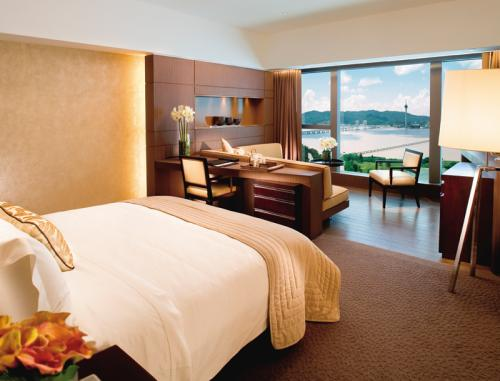

D1乐山：巨型睡佛>乐山大佛>乌尤寺
第一天首先乘船观赏位于乐山城侧的三江汇流处，乌尤山、凌云山和龟城山三山组合而成的巨型睡佛奇观。随后参观雕凿在岷江、青衣江、大渡河汇流处的岩壁上，依岷江南岸凌云山栖霞峰临江峭壁凿造而成的乐山大佛。乐山大佛，又名凌云大佛，为弥勒佛坐像，是世界上最大的石刻弥勒佛坐像，是国家5A级旅游景区。最后，乘车前往乌尤山，游览顺山势设计，曲折高低，玲珑雅致，别具一格的乌尤寺。

餐饮：来乐山，一定要吃一顿正宗地道的跷脚牛肉。乐山高铁站对面的嘉州美食城里面有一家有名的跷脚牛肉店。他家的牛肉色香味美，入口顺滑，鲜美无比。
住宿：晚上可住在位于市中心客运站，这附近的餐饮业和住宿业比较发达，以快捷酒店为主，也有一些旅馆和星级酒店，价格不等，方便第二天乘车去峨眉山。

D2峨眉山：报国寺>伏虎寺>雷洞坪>金顶
第二天早晨，即可乘车约一小时后到达峨眉山景区，首先从天下名山的山门进入，参观峨眉山八大寺庙报国寺和伏虎寺，随后从游客中心乘车直达雷洞坪，短暂休息后乘坐缆车直达金顶，观看完纯黄金制作而成的十方普贤圣像，观看峨眉云海。

餐饮：中午可在游客中心附近的农家吃午饭，晚饭可在雷洞坪或金顶吃，景区食物价格随海拔而提高，味道也相差很大。推荐游客自带干粮。
住宿：晚上可以住在金顶，“卧云庵”等一般旅店价格相对合理。金顶宾馆条件好一些，但是较贵，秋季需要提前预定好。
D3峨眉山：金顶>万年寺>清音阁
早晨早起抵达最高峰观看峨眉日出，感受第一缕阳光照在金灿灿的佛像身上的震撼，也可等待峨眉云海，幸运的话可以看到雪山。随后，乘坐游览车下山至万年寺，游览峨眉八大寺庙之一的清音阁，随后下山返回乐山市区。

餐饮：中午可在雷洞坪或是清音阁吃当地农家的饭菜，晚上可以返回乐山市，品尝当地地道的豆腐宴、冷锅鱼和乐山甜皮鸭等。

晚上可住在乐山火车站附近，那里有很多快捷酒店，附近商店众多，吃喝玩乐比较方便。而且便于返程。